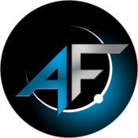

AlFilo
Star Citizen Org

Un grupo de personas nos juntamos para formar un lugar con una visión: buscar la rentabilidad en el juego, el respeto a los compañeros y una cadena de mando basada en la meritocracia.
En AlFilo queremos ver todo el contenido del juego con un ritmo sano. Somos un engranaje forjado a partir de las ilusiones y las aportaciones de sus miembros con la finalidad de divertirse.
AlFilo se organiza mediante rangos con responsabilidades claras. Cada nivel implica derechos y deberes dentro de la comunidad, con una cadena de mando basada en la meritocracia y el compromiso.
AlFilo es una organización con una visión clara: convertirse en un líder destacado dentro del universo de Star Citizen. Su misión se centra en proporcionar un ambiente donde los miembros puedan disfrutar al máximo de todas las posibilidades que ofrece el juego, dentro de una estructura con valores y mando sólidos.
AlFilo cubre el espectro completo de actividades en Star Citizen. Cada área opera con coordinación interna y contribuye al ecosistema económico y operativo del clan.
Buscamos jugadores que quieran formar parte de una organización con estructura real. No importa tu experiencia; importa tu disposición a cooperar, respetar a los compañeros y contribuir a los objetivos del grupo.
Con más de 700 miembros y 6 años de historia en Star Citizen, hay un lugar para ti en AlFilo.
Una embajada consiste en establecer una conexión formal entre tu organización y AlFilo. Es el canal oficial para iniciar relaciones de cooperación, contratos de servicio o alianzas operativas entre organizaciones del universo de Star Citizen.
Esta sección está reservada para los creadores de contenido asociados a AlFilo. Próximamente disponible.